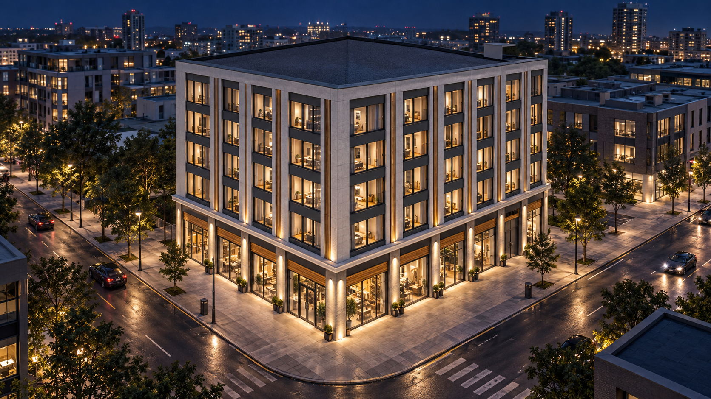
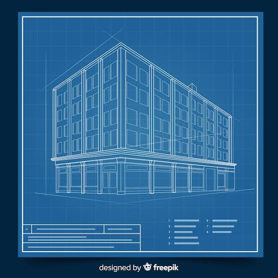
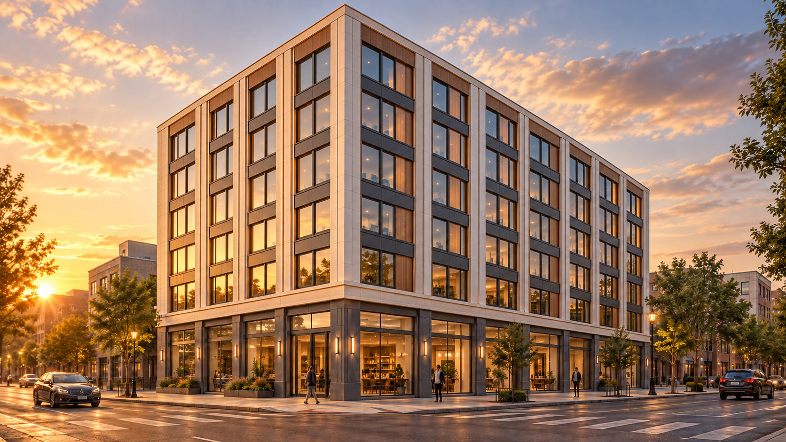
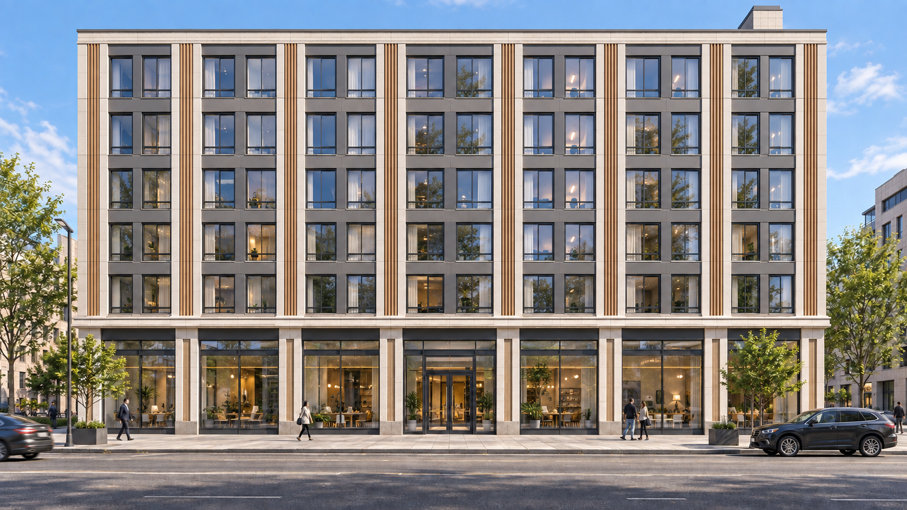

Avance conceptual 2026
TORRE
SANTA MARIA
Diseño arquitectónico, lenguaje de fachada y visualización del proyecto
Proyecto en una mirada
Una esquina urbana con vocación comercial
La propuesta organiza un volumen compacto sobre una planta baja transparente y activa. Las fachadas superiores mantienen una modulación vertical constante.
Datos referenciales para comunicar el avance conceptual.


Punto de partida
El croquis definió la volumetría inicial
Volumen rectangular ubicado en una esquina urbana.
Planta comercial abierta mediante grandes superficies de vidrio.
Fachadas superiores ordenadas por una retícula regular.
Cubierta plana y expresión arquitectónica vertical.
Concepto arquitectónico
Claridad formal y presencia en esquina

Lenguaje material
Una fachada contemporánea de tonos cálidos
La paleta busca una imagen sobria durante el día y una presencia cálida durante la noche.

Fachada principal de día
La composición frontal confirma el número de niveles, el ritmo de las ventanas y la transparencia de la planta comercial.
Perspectiva de tarde
La vista de esquina permite leer ambos frentes y muestra cómo la luz cálida resalta la profundidad de la fachada.
Presencia nocturna desde el aire
La iluminación interior y exterior refuerza el carácter urbano del edificio y mantiene visible la modulación vertical.
Relación con el entorno
La planta baja activa el espacio público
La transparencia comercial mejora la relación visual con la vereda. La esquina concentra los accesos y ofrece visibilidad desde ambos frentes.
Estado del proyecto
La fase conceptual alcanza una definición visual consistente
Ruta propuesta
Próximas 16 semanas de desarrollo
Arquitectura
Plantas, cortes, elevaciones y validación del programa.
Ingenierías
Coordinación estructural y definición de instalaciones.
Costos
Metrados, especificaciones y presupuesto preliminar.
Expediente
Compatibilización, revisión normativa y entrega técnica.
Cierre
Una dirección visual definida para avanzar a la etapa técnica
Los renders consolidan la volumetría, la materialidad y la relación urbana que orientarán el desarrollo arquitectónico.